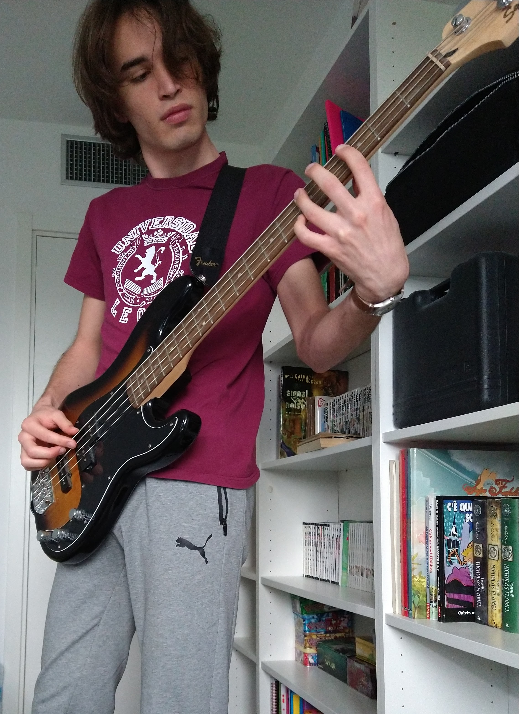

Passions
I have always been easily impressed by people and if I came across anyone with a very strong drive in some area I would easily be captivated and start gaining interest in that area as well, this is why I have tried many different hobbies and, to this day, I have many different interests that I would like to explore further if I had the time.
Movies
Movies are probably the thing that I like the most at the moment, leave me in front of a good TV or at the movie theater and you will find me there. I am trying to build a movie culture that is as broad as possible.
My favourite new director is Denis Villeneuve, I think that his movies have an incredible feeling, he is very talented in both directing and photography. My favourite movie of his might be Blade Runner 2049.
My favourite "vintage" director is Stanley Kubrick, I have seen most of his movies and I do think that his works are simply timeless and will always be relevant and impressive. My favourite movie of his is The Shining.
Climbing
I really like climbing, I have been doing it for around half a year and I feel very comfortable while bouldering, top roping and lead climbing are still a bit out of my comfort zone but my objective is to be able to do at least one easy outdoors climbing route before the end of the year. I am trying to get better at it and until now I was able to always train between one and two times a week.
Music
I always loved music, I played bass guitar for a couple of years and I would say that I have a good enough musical culture, one of my favourite genres is nu-metal, one of my favourite bands is Linkin Park. Anything progressive, anything industrial, anything more rock or pop-ish is also up my alley.

Photography
I have always been fascinated by photography and I am always attracted by the idea of getting a good shot, there was a time when I was very into it and taking a lot of pictures with a Canon Eos 60D, working on the shots and trying to get better at it.
I still own a camera, but I do not use it anymore I usually just take pictures with my phone and I take care that the results are as good as they can possibly be. Some of my shots have been chosen to participate in some contests and I have taken pictures for a wedding in 2018.
Basketball
I played basketball for ten years as a kid and the passion never really went away, I have always been into the NBA and I followed it (sometimes more, sometimes less) for the last seven years. Go OKC!
Reading
I have never been a reader in my life, always struggled with the idea of reading a book, but when I started going to university I built a habit and I found a way of keeping me into the loop. I am surely not the fastest reader, I am not one of those people that can read 50 books a year, but I do enjoy reading and I do it when I can and when I feel like it. Currently trying to read more classics.
My favourite book? Hitchhiker's Guide to the Galaxy, by Douglas Adams.